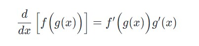
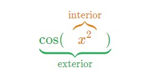
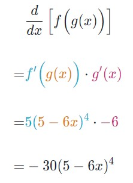

Derivadas
Regla de la cadena
La regla de la cadena nos dice cómo encontrar la derivada de una función compuesta. Repasa tu conocimiento sobre composiciones de funciones, y aprende a aplicar correctamente la regla de la cadena.
La regla de la cadena establece que:
Una funcion es compuesta si puede escribirse como f(g(x)). En otras palabras, es una funcion dentro de una funcion, o sea una funcion de una funcion.
Por ejemplo, cos(x2) es compuesta, por que si hacemos f(x) = cos(x) y g(x) = x2, entonces cos(x2) = f(g(x)).
g es la funcion dentro de f, por lo que decimos que g es la funcion "interior" y f la funcion "exterior".
Por otra parte, cos(x) * x2 no es una funcion compuesta. Es el producto de f(x) = cos(x) y g(x) = x", pero ninguna de las funciones esta dentro de la otra.
Ejemplo resulto de la aplicacion de la regla de la cadena
Vamos a ver como se aplica la regla de la cadena al derivar h(x) =
(5 - 6x)5. Observa que h es una funcion compuesta:
Descrita verbalmente, la regla dice que la derivada del a fncion compuesta es la funcion interior g dentro de la derivada de la funcion exterior f, multiplicada por la derivada de la funcion interior g.
Video de ayuda